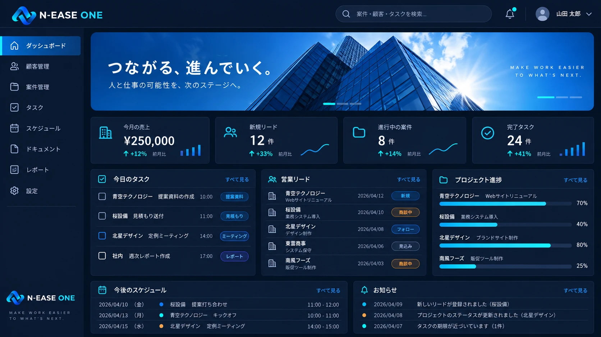
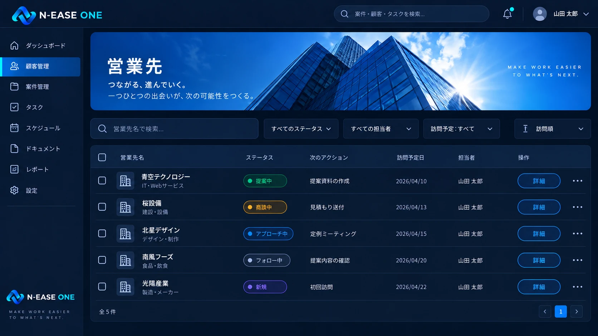
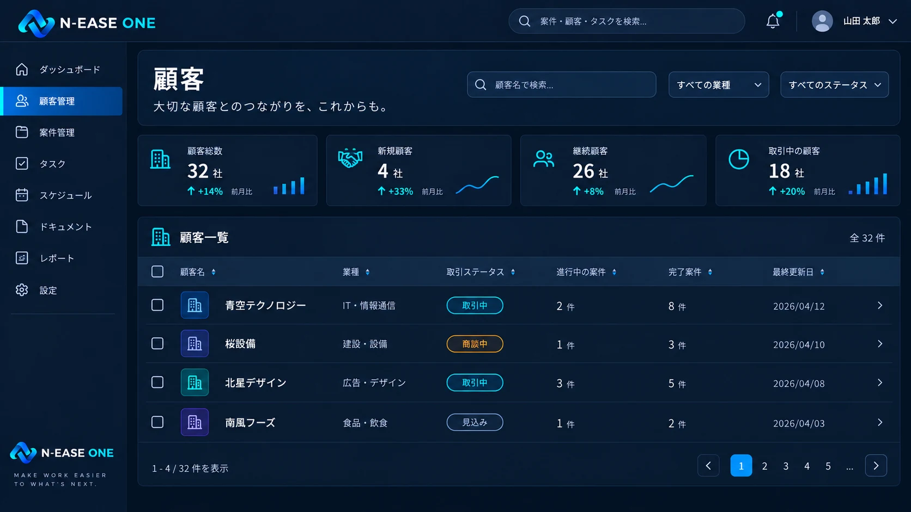
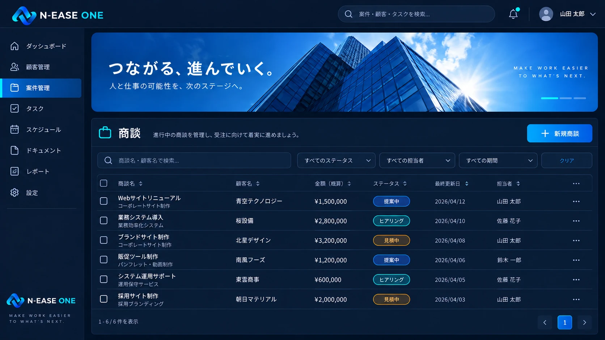
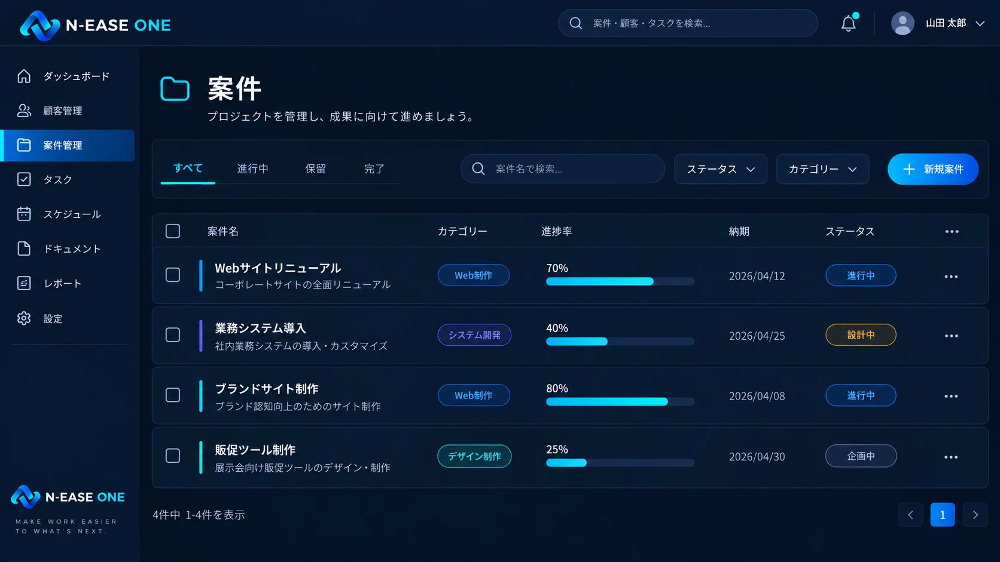
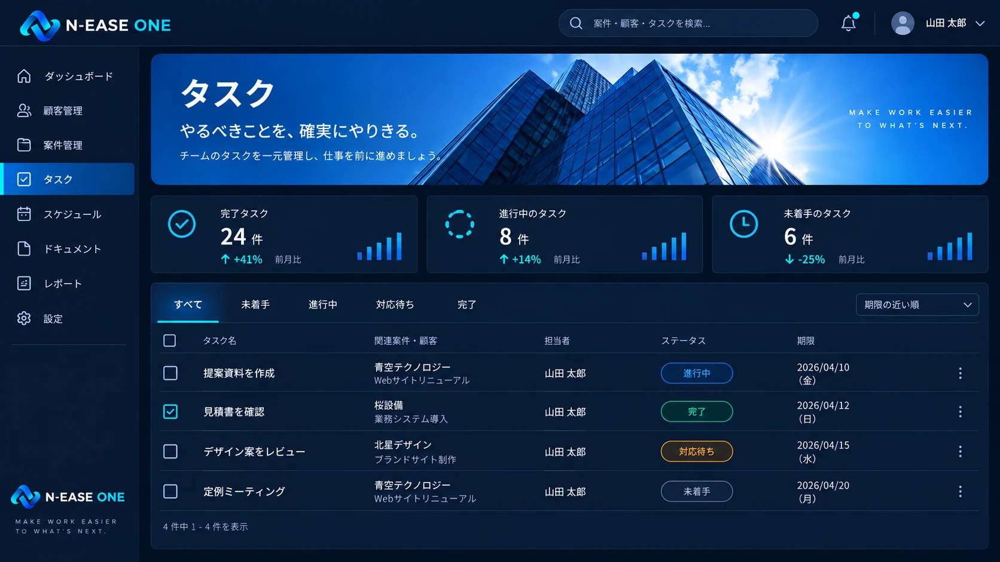
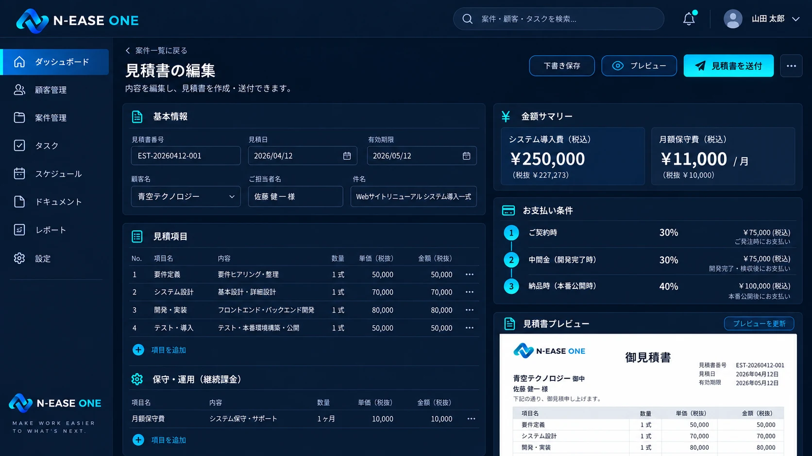
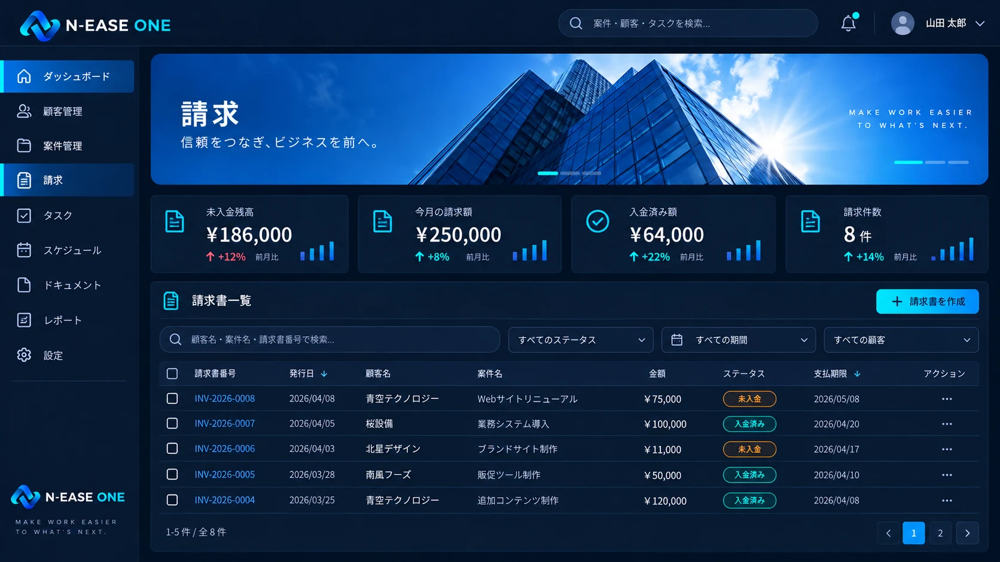
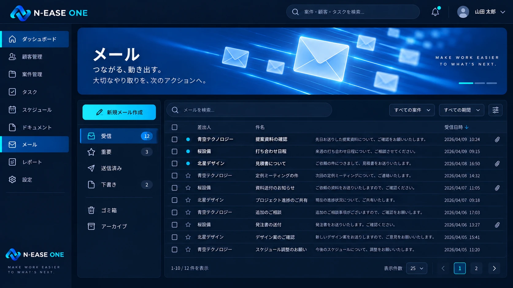
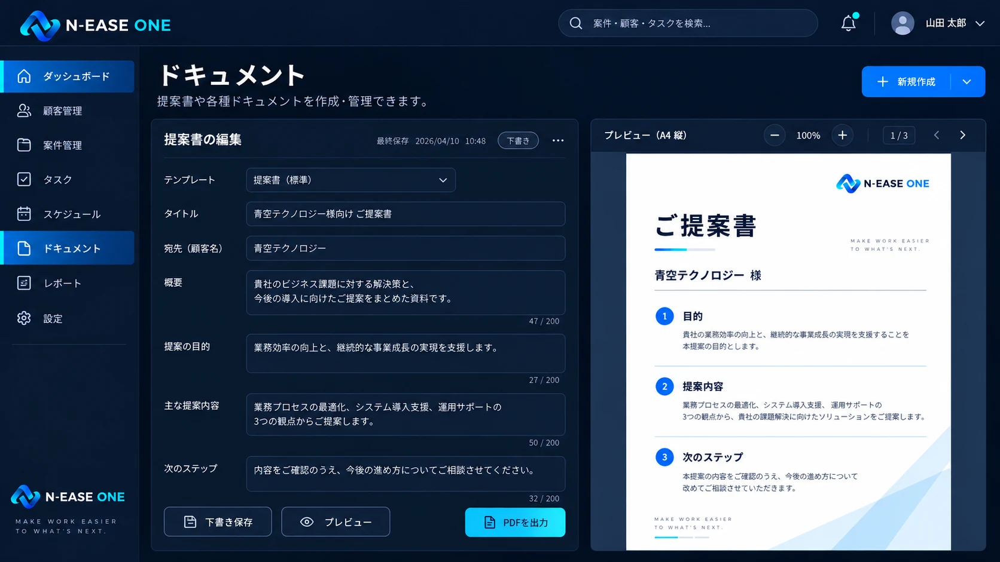

反応が見える
クリック、保存、完了。操作に対する状態変化を、その場で明確に伝えます。

ONE PLATFORM
顧客の情報から、商談、案件、タスク、見積、請求、入金、書類、メール、予定まで。
別々の場所にある情報をつなぎ、探す・確認する・転記する仕事を減らします。
全社員が同じ基盤を使いながら、
役割ごとに必要な景色を見られる。
PRODUCT EXPERIENCE
機能を移るたび、情報が途切れない。
ONEの実際の画面を切り替えてご覧ください。









CAPABILITY
機能の数ではなく、情報が自然に次の仕事へ渡ることを大切にしています。
DESIGNED FOR WORK
業務システムだからこそ、派手さより、迷わず続けられる操作感を。
クリック、保存、完了。操作に対する状態変化を、その場で明確に伝えます。
顧客から案件、タスク、見積、請求まで、関連する仕事をたどれます。
Dashboardのウィジェットや表示を、役割と優先順位に合わせて調整できます。
N-EASE WAY
Excelで解決できるなら、Excelでいい。既存サービスで足りるなら、それを使えばいい。小さなツールで済むなら、小さくつくる。
ONEは、既製品だけでは解決できない業務に対して、必要な機能を必要な分だけ組み合わせるための業務基盤です。
人が判断・確認・転記する場所を減らす。
ミスが減り、結果として仕事も早くなる。
N-EASE ONE
何を入れるかではなく、何を減らし、どうつなぐか。
まずは、今の業務について聞かせてください。